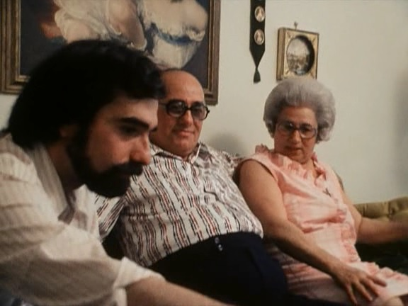
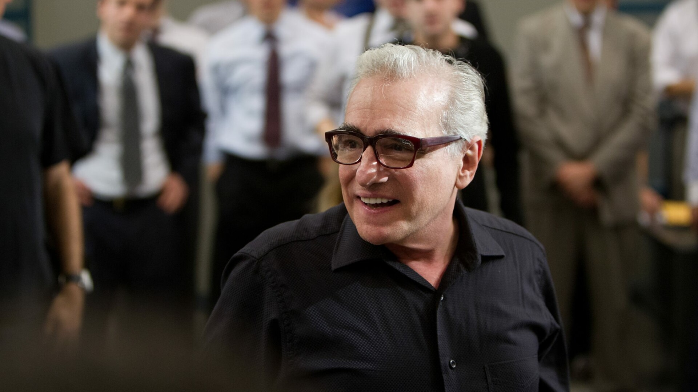
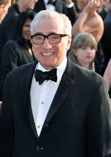

Prima Perioadă a Vieții
Prezentare a Vieții Incipiente a lui Martin Scorsese
Martin Scorsese s-a născut pe 17 noiembrie 1942, în cartierul Queens, New York, într-o familie de italieni americani. A crescut în zona Little Italy, un cartier cunoscut pentru influența sa culturală italiană, care mai târziu a devenit o sursă importantă de inspirație pentru filmele sale. Părinții săi, Charles și Catherine Scorsese, lucrau în industria textilă și aveau o atitudine tradițională față de viață. Tatăl său era croitor, iar mama sa era cusătoreasă. Familia sa modestă, dar iubitoare, i-a insuflat valorile muncii și importanța tradițiilor.
Probleme de Sănătate în Copilărie
În copilărie, Scorsese a suferit de astm sever, ceea ce l-a împiedicat să participe la activitățile sportive și să petreacă timp afară alături de alți copii. Din cauza acestor limitări, a petrecut mult timp acasă, găsindu-și refugiu în filmele difuzate la televizor și în cinematografele locale. Această pasiune timpurie pentru filme a fost catalizatorul carierei sale de regizor.
Religia și Influențele Timpurii

Martin Scorsese a fost crescut într-un mediu catolic strict, iar religia a avut un impact profund asupra perspectivei sale asupra vieții. De-a lungul anilor, temele legate de moralitate, vinovăție și salvare, inspirate din educația sa religioasă, au fost explorate în mod repetat în filmele sale. Inițial, Scorsese a fost tentat să urmeze o carieră religioasă și chiar a luat în considerare intrarea în seminar pentru a deveni preot. Cu toate acestea, interesul său pentru film a fost mai puternic și l-a determinat să urmeze o altă cale.
Educația și Descoperirea Filmului
Scorsese a urmat liceul Cardinal Hayes din Bronx, unde și-a cultivat interesul pentru artă și cultură. După terminarea liceului, a fost acceptat la Universitatea New York (NYU), unde a studiat cinematografia la Școala de Arte Tisch. În timpul anilor de facultate, Scorsese a realizat primele sale scurtmetraje, punând bazele stilului său distinctiv de regie.